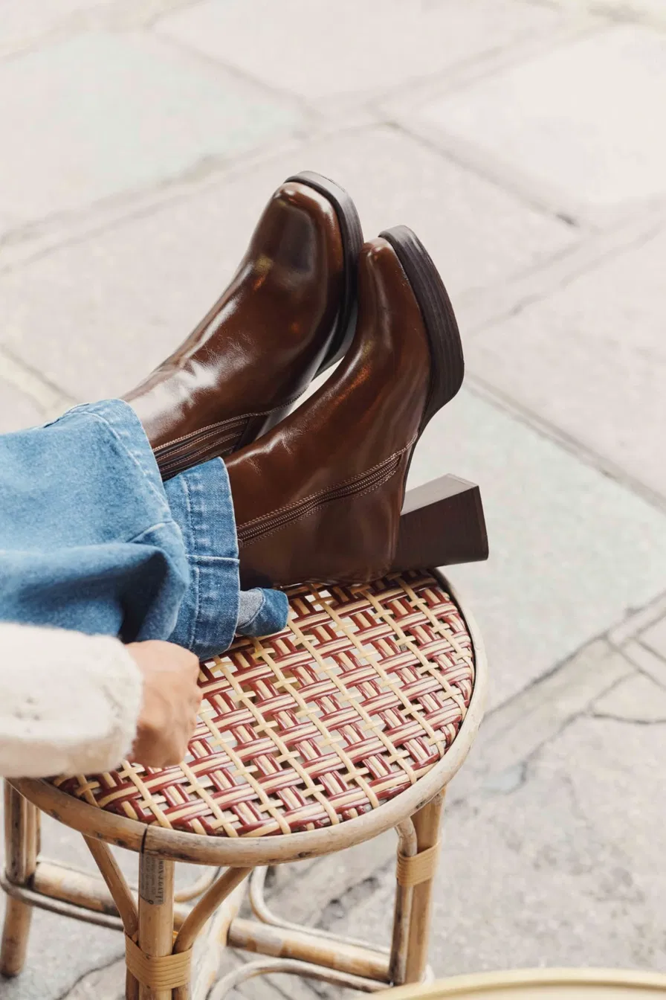
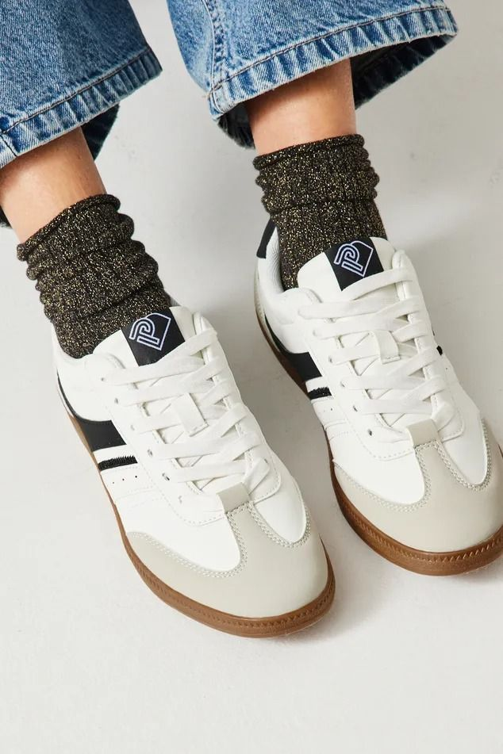
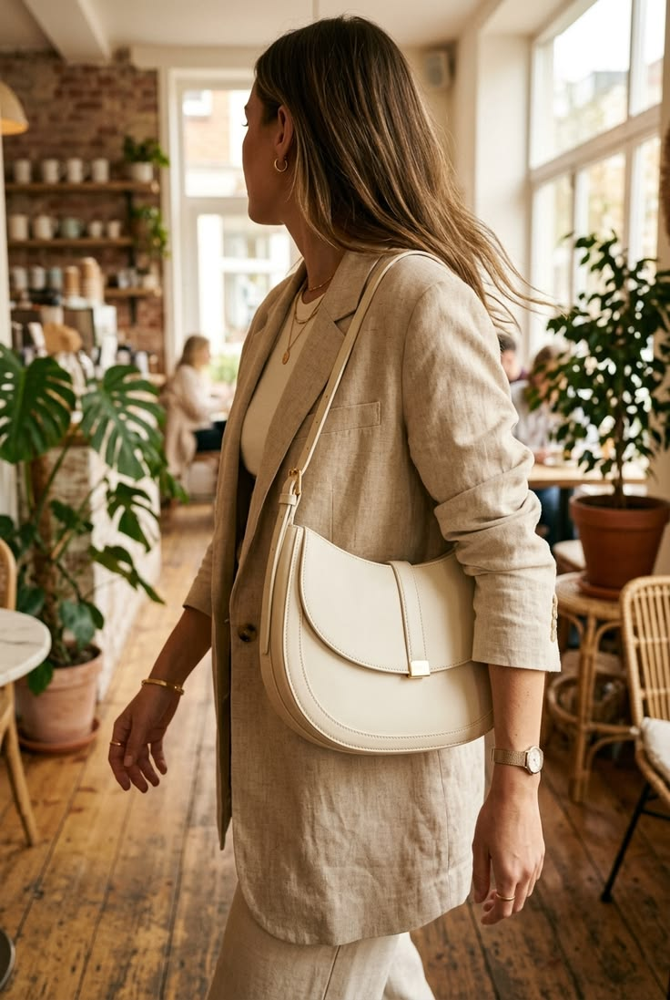
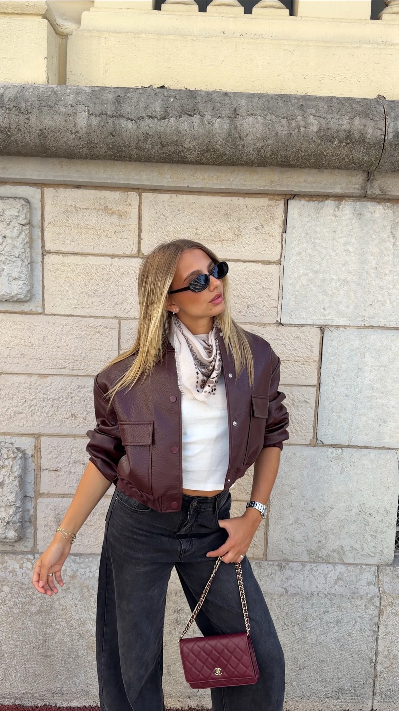
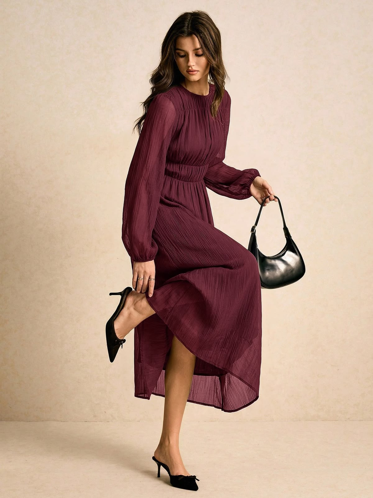
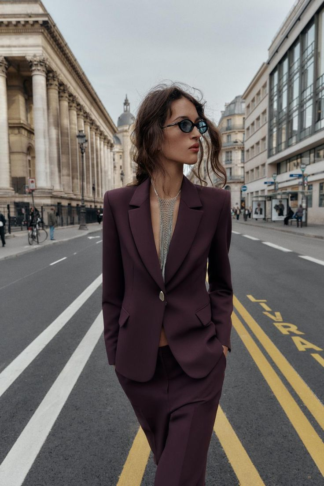
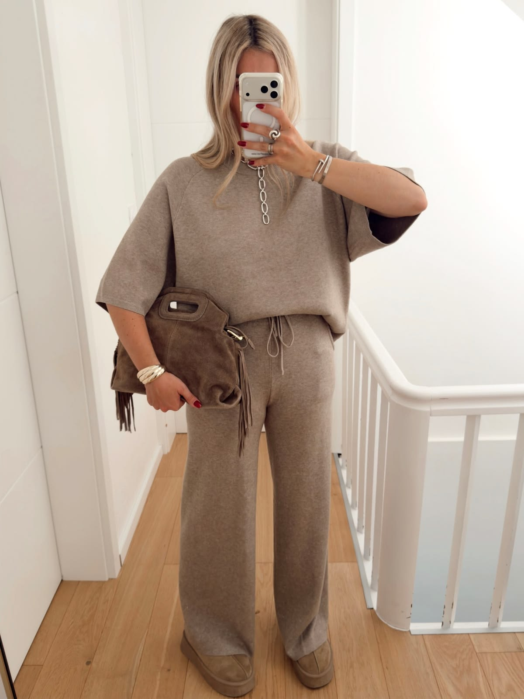

Les bottines
La bottine va avec presque tout : un jean, une robe midi ou un tailleur. En cuir ou en daim, elle donne tout de suite un look plus soigné.
Édition automne 2026
Les indispensables à avoir dans sa garde-robe cette saison.
Cette saison, j'hésite toujours entre mes bottines et mes baskets. Les bottines pour sortir, les baskets pour tous les jours : les chaussures automne 2026 relèvent vite une tenue simple.

La bottine va avec presque tout : un jean, une robe midi ou un tailleur. En cuir ou en daim, elle donne tout de suite un look plus soigné.

Les baskets, c'est pour les jours où on marche beaucoup. Avec un jean large et une veste, ça reste propre.
Un sac à main et une veste automne femme suffisent à changer une tenue très simple. Je les choisis selon la journée : cours, sortie ou soirée.

À l'épaule pour la journée, en pochette le soir. Un sac rouge tomate sur une tenue toute noire, ça marche bien.

La veste en cuir ou en mouton retourné se met sur un jean et un pull. Quand il fait froid, on ajoute une maille en dessous.
Robe automne, tailleur femme, ensemble femme ou combinaison femme : des pièces qu'on enfile d'un coup, sans réfléchir. Il suffit de changer les accessoires pour passer du bureau à la soirée.

La robe se porte toute la journée avec des bottines et une veste. S'il fait frais, un pull fin par-dessus.

Le tailleur femme est pratique pour le bureau ou un stage. Une maille fine en dessous et des bottines, et c'est réglé.

L'ensemble femme et la combinaison femme, c'est une tenue prête en une minute. Avec une veste en cuir en journée, avec des bijoux le soir.